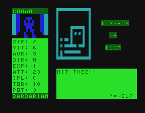

Dungeon of Doom Usborne Books(1984)

| Download and unzip the following file, then launch the emulator by clicking the screenshot. |
|
| Further Instructions: Because of this Computer RPG's size and complexity it takes multiple files to run, which means you must download those files to your computer and load them when prompted. To save or load files use the "Record" or "Choose File" buttons of the emulator when prompted. |
© 2019 Dr. James B. Gerrie and Charles Gerrie
Dr. James Gerrie's Faculty Page